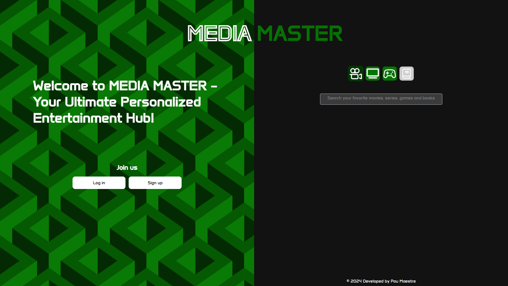

Sobre mí

Soy Pau Maestre Fernandez, técnico en desarrollo de aplicaciones web. Actualmente estudio el segundo curso del grado superior de DAW y trabajo como celador en el Hospital Universitario de Bellvitge. Me apasiona crear soluciones digitales funcionales, limpias y centradas en el usuario.
En mi tiempo libre disfruto de los videojuegos, las series y el cine. Mi saga favorita es Star Wars, la cual me inspira con su universo épico y personajes memorables. Busco seguir creciendo profesionalmente en el mundo del desarrollo web.
Estudios üìñ
- Grado Superior en Desarrollo de Aplicaciones Web – Institut Esteve Terradas i Illa (2021 - 2024)
- Grado Medio en Sistemas Microinformáticos y Redes – Institut Esteve Terradas i Illa (2019 - 2021)
Experiencia Laboral üëî
Celador - Hospital Universitario de Bellvitge
Como celador, mis responsabilidades incluyen:
- Transporte de pacientes por diferentes áreas del hospital.
- Asistencia al personal médico y de enfermería.
- Apoyo logístico en urgencias y quirófano.
- Distribución de material médico y orientación de pacientes.
Conocimientos üíª
Grado Superior en DAW
- Front-end & Back-end Development
- HTML, CSS, JavaScript, PHP
- Base de datos: MySQL, SQL
- Diseño responsive y UX/UI
- Seguridad Web, pruebas y depuración
- Git y control de versiones
- Despliegue en servidores
Grado Medio en SMX
- Instalación de sistemas operativos
- Montaje y reparación de equipos
- Redes locales y servidores
- Seguridad informática
- Soporte técnico y virtualización
Proyectos
üåê Portafolio Web Personal
Portfolio responsive hecho con HTML y CSS. Diseño limpio y minimalista.
Ver proyectoüéÆ ¬øQui√©n quiere ser millonario?
Aplicación basada en el famoso concurso de TV. Desarrollada en grupo con metodología SCRUM.
Ver proyecto en GitHubüìä Aplicaci√≥n de votaciones
Herramienta web para crear y compartir encuestas dinámicas y votar en tiempo real.
Ver proyecto en GitHubüé¨ MediaMaster
App para gestionar listas de películas, series y videojuegos. Proyecto final en grupo.
Ver proyectoContacto
¿Quieres contactar conmigo? Escríbeme:
- Email: maestrep15@gmail.com
- GitHub: @pmaestre03
- LinkedIn: Pau Maestre Fernandez
- Descargar CV